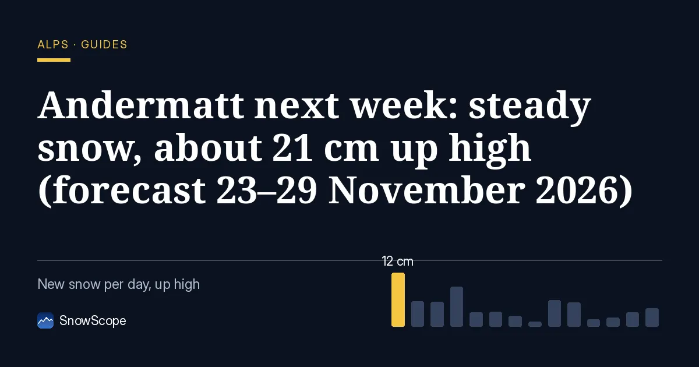

Andermatt next week: steady snow, about 21 cm up high (forecast 23–29 November 2026)
Next week at Andermatt, 23 to 29 November, the upper slopes will collect about 21 cm (forecast range 3 to 38 cm), while the base catches 15 cm. This follows a first layer of 31 cm that fell earlier in the week, so fresh snow will land on a foundation that is already taking shape.
See the live snow forecast for Andermatt in the SnowScope appSnow depth, powder alerts and the 3D map, free.

When the snow arrives next week
Wednesday 25 November is the peak day: the top of the mountain picks up 6 cm (up to 10 cm), and the middle slopes get almost as much. Thursday 26 November adds another 5 cm at the summit, with a possible 10 cm in the best case.
Sunday 29 November brings a third push of 3 to 4 cm, so snow arrives in pulses rather than one big event. Between these three main days, expect only flurries.
Height makes the difference
Up at 2800 m, the forecast totals 21 cm for the week. Drop to mid-mountain (2200 m) and you lose just 2 cm—the air is still cold enough to hold most of what falls. The base at 1437 m stays below freezing through the week, so even at the village level, 15 cm of snow is forecast.
This even distribution across the mountain means skiers at all elevations should see usable snow by the end of next week.
Where to ski for the best snow
The Gemsstock's north-facing freeride bowls will hold the deepest and longest-lasting snow through the week. The upper ridges and shaded terrain catch more from the storms that cross the Alps from north and south.
Andermatt village and the slopes along the Oberalp road towards Sedrun will see less accumulation and more wind and sun exposure, so plan those runs for mid-afternoon after the pistes have been worked by boots.
What you are skiing onto
Before next week begins, Andermatt already picks up 31 cm between Tuesday 17 and Friday 20 November (forecast range 24 to 39 cm). That base layer of earlier snow is crucial: it means next week's fresh powder lands on a thicker, more stable foundation rather than thin early-season cover.
The base will have 11 cm from these early days, cold enough to keep everything white right down to 1437 m.
How this week and next week compare
This week (through 20 November) brings 31 cm up top and 11 cm at the base. Next week (23–29 November) adds 21 cm at the top and 15 cm at the base. Combined, skiers will have built a reasonable mid-November snowpack by the end of the month.
Nearby resorts—Engelberg, Laax and Saas-Fee—are all in the same weather system and forecast similar totals, so the choice comes down to terrain and which lifts open first.
Watch for changes
A forecast spread of 3 to 38 cm means uncertainty is real. A week out, the storm track can still shift, bringing either a small top-up or a major dump. The range shrinks as you move down the mountain: 3 to 28 cm at the base instead.
Storm timing usually locks in sooner than the totals do, so if Wednesday 25 is marked on your calendar now, it is likely to hold, but keep an eye on Wednesday's low and high until a day or two before.
Tips for skiers
- Fresh snow on a young snowpack means avalanche risk exists off-piste: check the Swiss avalanche bulletin and read the conditions before leaving marked terrain.
- Confirm the resort's opening date and which lifts are running before you travel; snow on the mountain does not guarantee access.
- Wednesday 25 November is the best day to ski. Aim high and pick north-facing terrain if you want to ride the new snow longest.
- If you are skiing the base runs (Andermatt village area, Oberalp road), plan for earlier in the day before sun and wind work the surface.
About these numbers
Resort snow depths are the deepest snow on the resort's upper slopes on the date shown; they are estimates for an area, not a measurement at one point. Forecasts can change. Always read the official avalanche bulletin before going off-piste.
Cite this report
For research, teaching or the press: the numbers and charts are free to reuse under CC BY 4.0 with this citation.
SnowScope (2026), Andermatt next week: steady snow, about 21 cm up high (forecast 23–29 November 2026), https://snowscope.app/blog/en/2026/11/andermatt-snow-forecast-next-week-23-29-november-2026.html, accessed 2026-11-16
SnowScope (Atlas Labs). (2026, November 16). Andermatt next week: steady snow, about 21 cm up high (forecast 23–29 November 2026). SnowScope snow reports. https://snowscope.app/blog/en/2026/11/andermatt-snow-forecast-next-week-23-29-november-2026.html
BibTeX
@misc{snowscope2026andermattsnowforecastnex,
author = {{SnowScope (Atlas Labs)}},
title = {Andermatt next week: steady snow, about 21 cm up high (forecast 23–29 November 2026)},
year = {2026},
month = nov,
howpublished = {\url{https://snowscope.app/blog/en/2026/11/andermatt-snow-forecast-next-week-23-29-november-2026.html}},
note = {Published 2026-11-16 11:37 UTC; accessed 2026-11-16}
}· CC BY 4.0 · Methods, data and tools →
Andermatt: snow and temperature by height, this winter vs last (tools) →
Follow Andermatt
Free: a message when fresh snow is coming, and the forecast every morning.
More snow reports

Lachtal costs EUR 62 a day and children under 7 ski free. Mid-mountain had 30 cm or more in 72 % of Decembers mid-month onwards. Snow depth on 13 November 2026.

Compare December snow odds and checked lift pass prices starting at 40.00 EUR across Italian ski areas for your weekend drive.

Hochkar mid-mountain has 38 cm on a typical 15 December, and 63 % of winters had 30 cm or more in that week. Day tickets from EUR 32.90 on quiet dates.